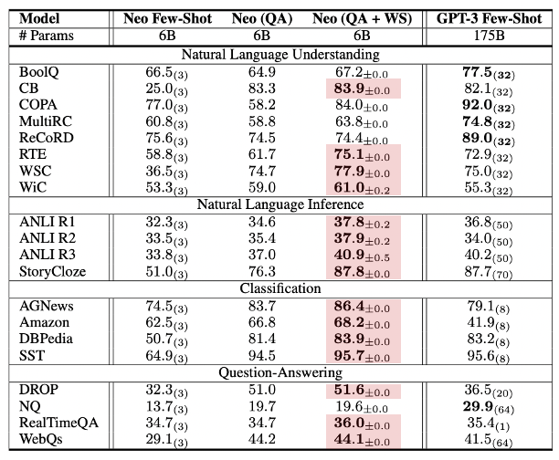
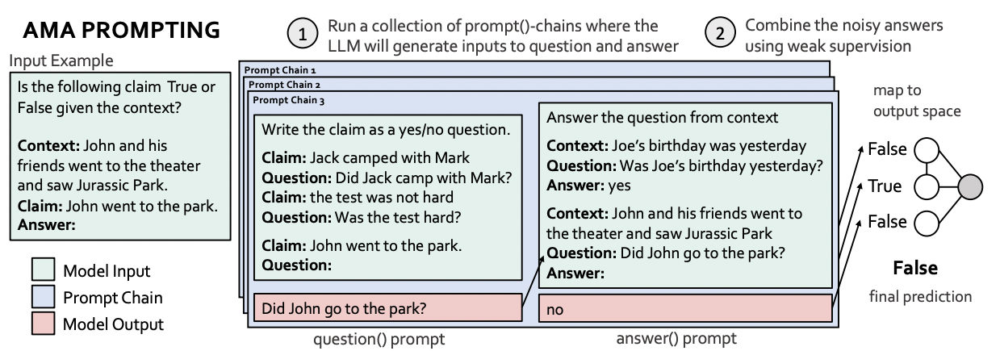
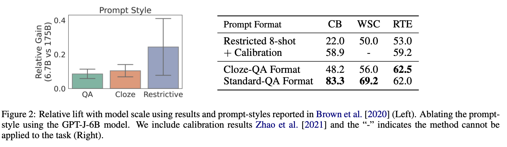
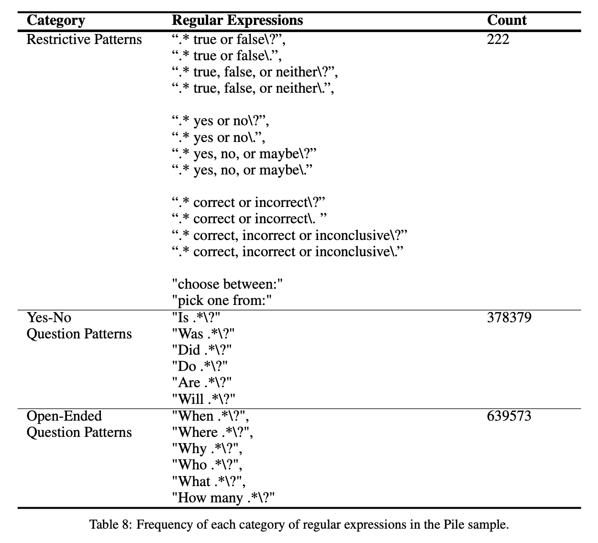
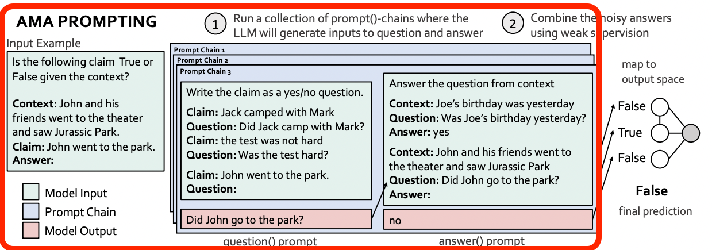
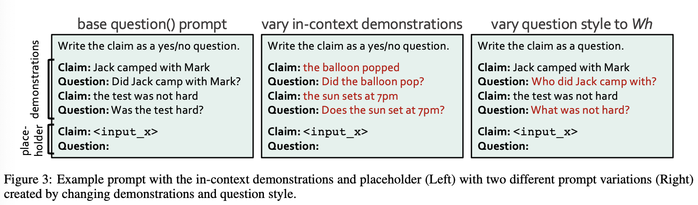
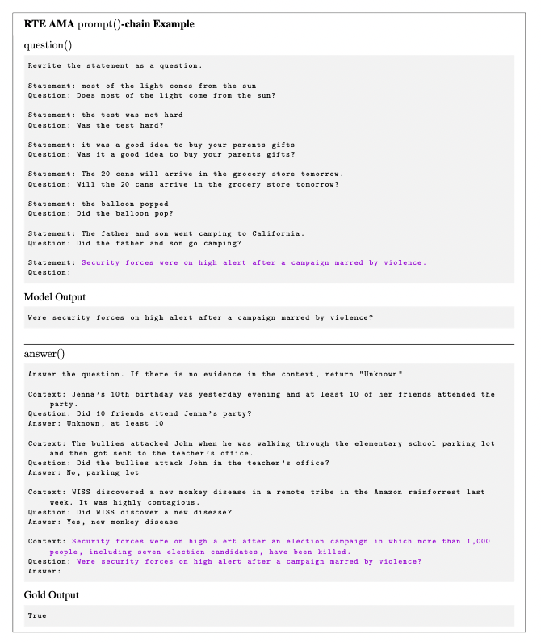
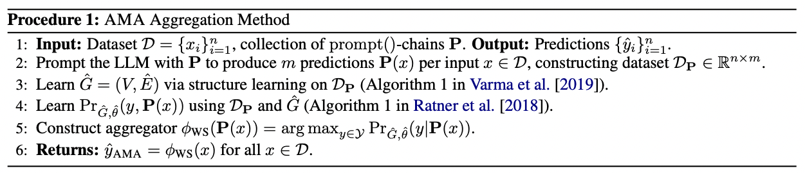
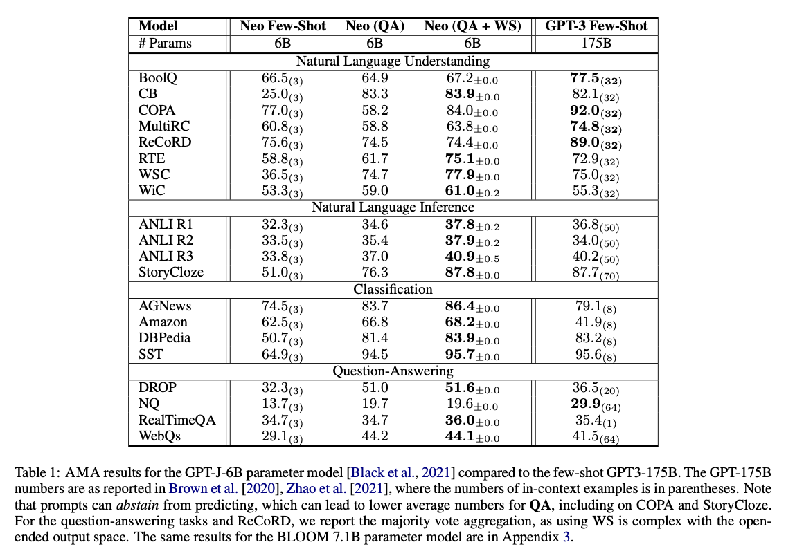

Ask Me Anything: A simple strategy for prompting language models#

키워드#
ICLR 2023 top 25%
In-context learning
Effective prompting
주관적인 Preview 이자 전부#
In-context learning에서 일반적(general)으로 사용할 수 있는 prompting 방법 제시
효과는 굉장했다!
6B 모델로 175B보다 뛰어넘거나 비슷한 성능! 
주관적 입장: 앙상블로 정확도 높인 느낌 (**: contribution)
기존 프롬프트를 모델이 학습 시 많이 본 **QA 형태(QA Prompt Chains)** 로 여러 개 생성
생성된 여러 답 중 그래프 구조의 weighted Majority vote 통해 최종 답 선택 (**weak supervision**) 
(번외) NLP의 self-consistency와 유사
분석이 굉장허다!
모든 아이디어의 근거가 있음, 엄청난 새로운 아이디어가 있는 건 아니지만 연구적으로 좋은 논문
Introduction#
LLM은 in-context learning 가능하지만 프롬프트를 어떻게 설정하는지에 따라 성능 차이가 크다
작은 프롬프트 변화 → 성능 큰 variation
모델-by-모델, task-by-task 프롬프팅 필요
좋은 성능을 위해 perfect prompt가 필요
권고 사항이 사람이 메뉴얼하게 찾는 것 ⇒ Nooooooooooo!
목적
This work instead consider
aggregatingthe predictions ofmultiple effective, yetimperfect, promptsto improve prompting performanceover a broad set of models and tasks.고려할 점
Effective prompts : 여러 task와 여러 모델에 잘 동작하는 프롬프트 format 찾기
Scalable collections : task를 reformatting해서 여러 개로 만드는 전략
Prompt aggregation (Multi-Head Attention 느낌) : 정확도와 의존성(?)을 고려하는 Majority Vote 전략
Method#
1. Effective Prompt Formats!#
태스크, 모델(종류,크기)에 전반적으로 잘 작동하는 효과적인 프롬프트 포맷 찾기
이전 연구를 참고하여 3가지 포맷을 실험
restrictive question : 아웃풋 형태 제한
John invited Mark to come watch Jarassic Park. Output True or False?
cloze-question : 빈칸 채우기
John invited Mark to come watch Jurassic _
free-form question (traditional QA): yes-no, Wh 형태
Where did John invite Mark?
결과 
open-ended > restrictive
open-ended(cloze, free-form QA)
모델 크기에 따른 relative gain이 적다 ⇒ 전반적으로 잘 동작한다
open-ended 단점: 원하는 아웃풋 class로의 mapping이 요구될 수 있다.
ex. 글 종류 분류 task에서 open-ended 아웃풋이 ‘journal’, 하지만 원하는 아웃풋 class에는 journal이 없음 -> mapping 프롬프트 : A ‘journal’ maps to category: written work
QA가 더 좋은 이유?
foundation 모델의 편향된 데이터셋, open-ended가 훨씬 많음
즉, foundation 모델이 많이 본 형태로 입력하는 것이 좋다. 특히 모델 크기가 작은 경우 더 그럼. (6B는 애기에요) 
AMA’s prompt format#
(question) : LLM이 input을 question으로 생성
(answer) : 생성된 question으로 LLM으로 답 유추 
2. Creating Prompt Collections at Scale#
multiple QA 프롬프트 생성하기
다각도의 정보 수집하고 답 추출 ⇒ 성능 향상
ex. Who went to the park?, Did John go the park?, Where did John go?
multiple QA ⇒ prompt()-chain, task 상관없이 적용되기 때문에 functional 형태
하지만 코드를 보면 task 별 in-context prompting이 상당함…
mapping 프롬프트도 허점…
prompt()-chain 
question(): \(x \rightarrow q\) , input \(x\)로부터 qeustion \(q\) 생성
in-context demonstration, style of question
answer(): \(q \rightarrow a\), 생성된 question \(q\)에서 후보 답 \(a\) 생성
prompt()-chain 예제 
3. Prompt Aggregation#
prompt predictions을 하나의 아웃풋으로 aggreate ⇒ 그래프 구조의 weighted Majority vote 사용
그래프 의존도 구조와 정확도 예측 모델을 weak supervision으로 학습
과정이 복잡하나 새로운 아이디어를 제시한 것은 아니고 기존 있었던 방법을 고대로 결합
의존도, 정확도 학습이 attention weight와 비슷한 것 같음. task와 질문의 관련도/중요도를 고려할 수 있는 방식인 것 같음
Aggregation 방법#
 1. 의존도 그래프 \(G\) 학습
학습 데이터: 데이터로 만든 question의 예측 집합(set) \(\mathbf{P}(x)\),
즉, answer()-chain
학습 방식: weak supervision, Varma et al [2019]
Learning Dependency Structures for Weak Supervision Models
2. 정확도 예측 모델 \(Pr_{G,\theta}\) 학습
학습 데이터: 학습된 의존도 그래프 G, G의 학습 데이터 \(\mathbf{P}(x)\)
학습 방식 : weak supervision, Ratner et al. [2018]
Training Complex Models with Multi-Task Weak Supervision
3. 정확도 예측 모델의 확률값을 가장 크게하는 아웃풋 선택
Notation#
\(\phi_{WS}= argmax_{y \in Y} Pr_{G,\theta}(y,\mathbf{P}(x))\) : aggregator
\(Pr_{G,\theta}(y,\mathbf{P}(x))\) : 확률 그래프 모델
\(\mathbf{P}=[p_1, p_2, ..., p_m]\): m 개의 question 프롬프트
\(\mathbf{P}(x)=[p_1(x), p_2(x), ..., p_m(x)]\) : 입력값 \(x\)에 대한 question 프롬프트의 예측값
\(G=(V,E)\) : 의존도 그래프
\(V=\{y, \mathbf{P}(x)\}\)
\((p_i(x), p_j(x)) \in E: edgeset,\;\;\; iff \;\;\;p_i(x),p_j(x): cond.\; indep.\;\; given\; y\)
\(\theta\) : 정확도 예측 모델의 파라미터
전체 아키텍쳐#
QA 형태의 (multiple) prompt chain
그래프를 사용한 Aggregator, 학습 시 WS(weak supervision) 사용
Experiments#
결과
classification task들… 
Error Analysis
Instruction-following errors: 특정 원하는 output space(ex.classification) 결과로 안나오는 경우
Knowledge errors: Factual, Commonsense 에서는 성능 크게 오르지 않음
Long-context errors
얻을 수 있는 insight#
크기가 작은 모델로 성능을 내고자 할 땐 그 모델을 학습했던 데이터 형식을 사용하자
그래프를 weak supervision으로 학습하고, weighted majority vote 할 수 있음
일종의 attention weight
답변에 더 도움되는 질문에 더 높은 가중치를, weak supervision으로 학습
의존도 그래프 학습의 필요성?
더 좋은 initialization이 될 수도 있을 것 같음 for faster, easier training